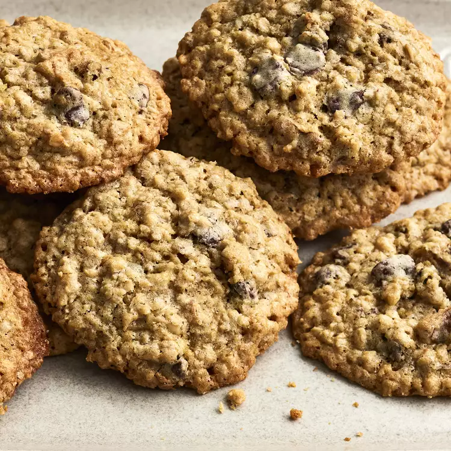

The Best Classic Chili Recipe

A favorite of mine, chocolate chip cookies with oatmeal to make it very chewy and partly healthy.
Make sure you have enough hands.
Ingredients
- 1 cup butter, softened
- 1 cup packed light brown sugar
- ½ cup white sugar
- 2 eggs
- 2 teaspoons vanilla extract
- 1 ¼ cups all-purpose flour
- ½ teaspoon baking soda
- 1 teaspoon salt
- 3 cups quick-cooking oats
- 1 cup chopped walnuts
- 1 cup semisweet chocolate chips
Steps
- Preheat the oven to 325 degrees F (165 degrees C).
- Cream together butter, brown sugar, and white sugar in a large bowl until smooth. Beat in eggs one at a time, until well combined; stir in vanilla extract.
- Combine flour, baking soda, and salt in a separate bowl; stir into the creamed mixture until just blended. Mix in quick oats, walnuts, and chocolate chips. Drop batter by heaping spoonfuls onto ungreased baking sheets.
- Bake in the preheated oven for 12 minutes. Allow cookies to cool on baking sheet for 5 minutes before transferring to a wire rack to cool completely.
Return to top
Return to main page